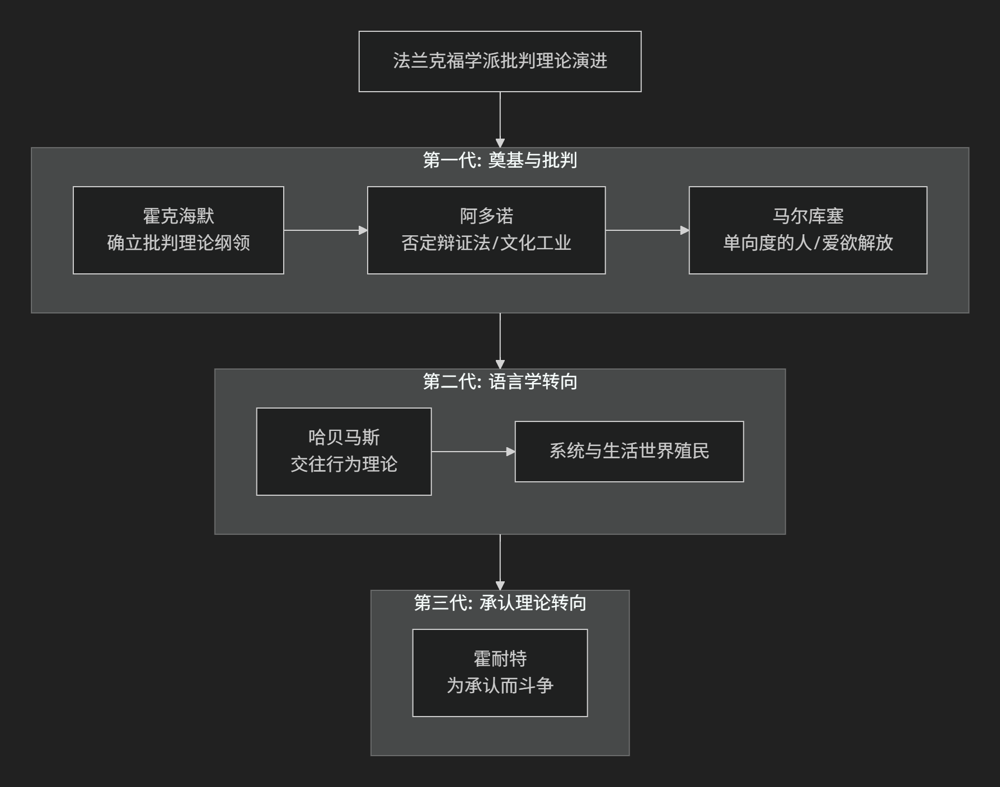

Frankfurt
基于法兰克福学派（Frankfurt School）理论视角。
法兰克福学派是20世纪最具影响力的批判性社会理论流派之一，它开创了被称为 “批判理论” 的独特思想传统。其核心思想可以概括为：对现代资本主义社会进行跨学科的、彻底的批判，揭示其如何通过经济、文化、心理等各种隐蔽手段，实现对人的深层奴役和异化，即使在社会物质丰裕和政治看似自由的条件下也不例外。其目标是唤醒一种能够超越现有社会结构的、真正的解放意识。
该学派的思想发展脉络与核心贡献，可以通过以下图表清晰地呈现其演进过程：

一、批判理论的总体纲领：对传统理论的超越
学派创始人 马克斯·霍克海默 在1937年的《传统理论与批判理论》一文中，确立了其基本立场。
传统理论：指实证主义的科学观，将知识视为对世界的 中立、客观的描述，旨在 预测和控制 世界。它接受现存的社会框架，并为之服务。
批判理论：则具有 反思性和规范性。它不满足于描述世界，而是要 揭示社会的内在矛盾、批判其不公正的权力结构，并致力于推动社会向更加自由、公正和理性的方向变革。其核心是 批判的、解放的旨趣。
二、核心批判维度
在上述总体纲领下，学派成员从不同维度对现代性展开了深刻批判。
启蒙辩证法与工具理性批判
核心著作：《启蒙辩证法》
核心命题： 启蒙精神在战胜神话、解放人类的同时，走向了自我毁灭。 它强调的“理性”逐渐退化为一种 工具理性 ——只关心手段的有效性，而不问目的的正当性。这种理性将世界（包括人）视为可计算、可操控的客体，最终导致新的神话：技术官僚统治和新的极权主义。
文化工业论
核心命题：在发达资本主义社会，大众文化不再是自主的艺术表达，而是成为 按照工业模式生产、传播和消费的商品。其功能是 麻痹大众的批判意识，为社会制造“同意”。
运作机制：文化工业通过提供标准化的、易于消遣的娱乐产品，让人们 逃避现实的压力，同时潜移默化地接受现有的社会秩序和价值观。它塑造了 被动、顺从的消费者，扼杀了否定性和反抗精神。
单向度的人
代表人物：赫伯特·马尔库塞
核心著作：《单向度的人》
核心命题：发达工业社会是一个 利用技术理性成功压制了社会否定力量（批判和超越维度）的极权主义社会。
单向度化：社会通过高生产和高消费，将原本对立的阶级（如工人阶级）整合进体系之中。人们的需要被塑造为“虚假需要”（如消费特定品牌），真正的需要（如自由、创造、否定）被压抑。人们失去了 批判和想象一个完全不同替代方案的能力，思想和行为都变得只有“单向度”——即认同和维护现状。
权威人格与法西斯主义心理分析
背景：为解释纳粹主义为何在文明高度发达的德国兴起。
研究：通过实证研究，他们将法西斯主义的群众心理基础归结为 “权威人格”——一种由僵化家庭结构塑造的、兼具对权威的屈从和对弱者的攻击的性格结构。这揭示了 社会心理是如何被经济体系所塑造并服务于该体系的。
三、第二代与第三代的范式转换
于尔根·哈贝马斯 的交往行为理论
核心转折：哈贝马斯将批判理论从“意识哲学”范式转向 “语言哲学”范式。
核心命题：工具理性并非理性的全部。 他提出 “交往理性” ，即人们在自由、平等的对话中，通过“更好的论据的力量”达成共识的理性。这种理性内在于语言交往的结构中。
诊断：现代社会的核心问题是 系统（以金钱和权力为媒介的经济和官僚体系）对“生活世界”（以交往行为为基础的日常文化领域）的殖民化。批判的任务是 捍卫生活世界，发展交往理性，以抵抗系统的侵蚀。
阿克塞尔·霍耐特 的承认理论
核心转折：将批判理论的基础从“交往”转向 “承认”。
核心命题： 社会冲突的深层动力是为“承认”而斗争。 主体需要从他人那里获得爱、法律平等和社会尊重等不同形式的承认，才能实现自我同一性。
诊断：社会不公的本质是 承认的拒绝或扭曲。批判理论的任务是分析这些“承认关系”中的病理，并为建立公正的承认秩序而奋斗。
—
核心要义与代表人物总结
理论维度 |
核心命题 |
代表人物与著作 |
|---|---|---|
总体方法论 |
批判理论超越传统理论，旨在社会解放而非仅仅描述社会。 |
霍克海默 （《传统理论与批判理论》） |
理性批判 |
启蒙走向自我毁灭，工具理性导致新统治。 |
|
文化批判 |
文化工业麻痹大众，制造顺从的消费者。 |
|
社会批判 |
发达工业社会造就”单向度的人”，消灭否定性。 |
马尔库塞 （《单向度的人》） |
心理批判 |
权威人格是法西斯主义的群众心理基础。 |
|
范式重建（第二代） |
以”交往理性”对抗”系统对生活世界的殖民”。 |
哈贝马斯 （《交往行为理论》） |
范式发展（第三代） |
社会斗争的本质是”为承认而斗争”。 |
霍耐特 （《为承认而斗争》） |
思想特质与影响
跨学科性：融合哲学、社会学、经济学、心理学、文学批评等进行整体分析。
辩证性：深刻揭示现代性的 两面性 ——其进步与倒退、解放与奴役并存于一体。
现实关怀：始终紧扣20世纪最重大的历史事件（法西斯主义、斯大林主义、消费资本主义、福利国家等）。
深远影响：为 文化研究、媒体研究、政治哲学、社会运动 等提供了核心的分析工具和批判视角。
总而言之，法兰克福学派的核心思想在于，它是一套 “关于奴役的清醒剂”和“关于解放的想象力” 。它教导我们，真正的批判在于质疑那些被视为理所当然的、最舒适和最“正常”的东西。它提醒我们，自由不仅需要物质基础，更需要一种**不妥协的批判精神和一种对另一种可能世界的坚定想象**。
[西方马克思主义] [后现代马克思主义]